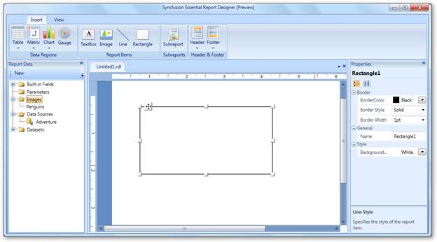
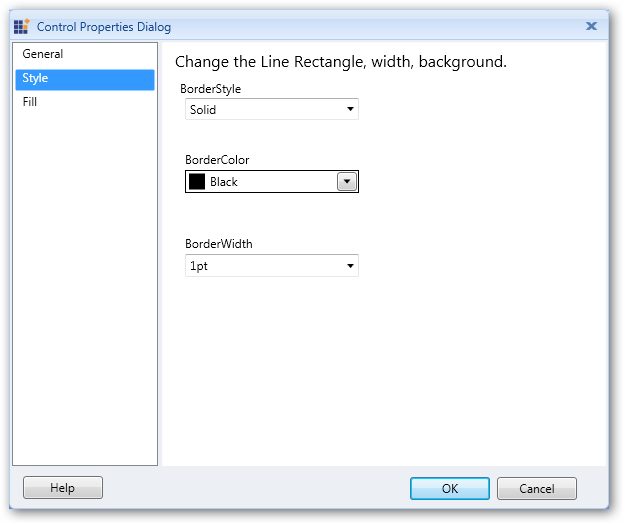
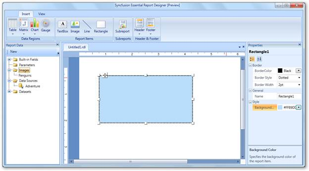
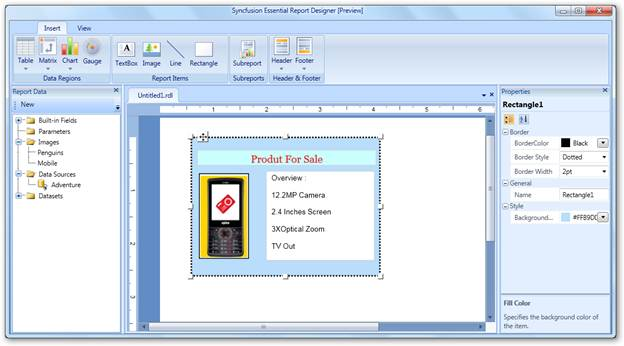

To add a rectangle to the Syncfusion Report Designer, select Rectangle from Insert tab and drag it to the Report Designer. A rectangle will appear on the Report Designer.

Figure 48: Adding a Rectangle
Applying Styles to the Rectangle
To apply styles to the rectangle:
1. Right-click on the added rectangle and click Rectangle Properties. It will display the Control Properties Dialog.

Figure 49: Control Properties Dialog for Rectangle
2. Select Style to set the style, color and width of the rectangle border.
3. To set the background color of the rectangle, select Fill.
4. Click OK.
 You can also apply styles to the rectangle
through the Properties grid. To open this grid, click on the added
rectangle.
You can also apply styles to the rectangle
through the Properties grid. To open this grid, click on the added
rectangle.
The following illustration shows the rectangle styled by the properties grid.

Figure 50: Rectangle Styled through the Properties Grid
Adding Report Items to the Rectangle
To add report items such as text boxes, lines, and images, to the rectangle, drag the selected report items to the rectangle.

Figure 51: Adding Items inside the Rectangle